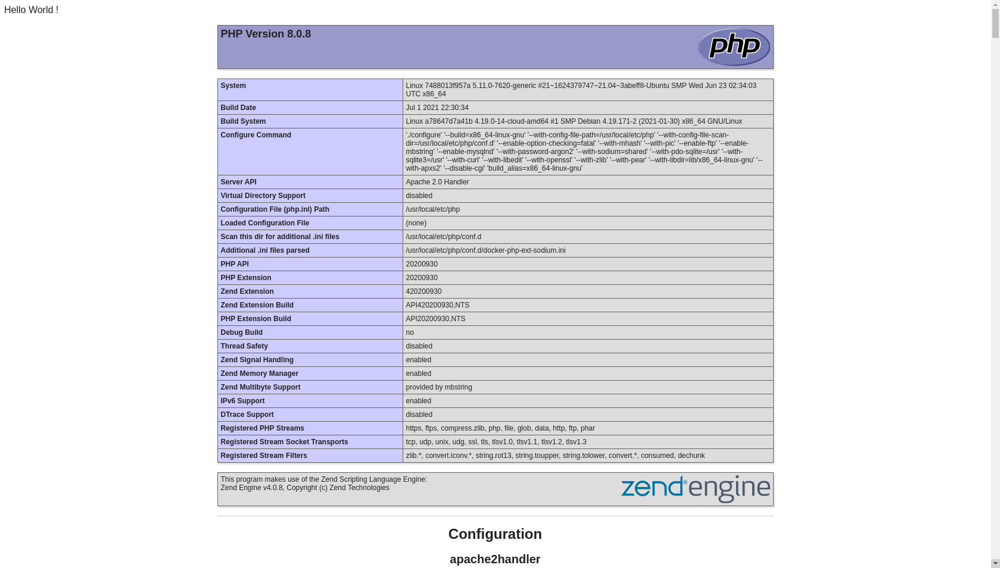

Ce TP permet de découvrir Docker et ses commandes.
Docker possède quelques commandes, vous pouvez les retrouver ici : https://devhints.io/docker ou sur la Documentation officielle (Menu déroulant de gauche > Command-line reference > Docker CLI (docker)).
Mais les commandes principales pour ce TP sont :
docker [COMMAND] --help # Cette commande permet d'obtenir de l'aide pour une autre commande. Elle est donc TRÈS importante !!
docker pull [OPTIONS] NAME[:TAG|@DIGEST] # Cette commande permet de télécharger une image disponible sur un registre
docker run [OPTIONS] IMAGE [COMMAND] [ARG...] # Cette commande permet de créer et lancer un conteneur
docker start [OPTIONS] CONTAINER [CONTAINER...] # Cette commande permet de lancer un conteneur déjà créé
docker exec [OPTIONS] CONTAINER COMMAND [ARG...] # Cette commande permet d'executer une autre commande dans le conteneur
docker ps [OPTIONS] # Cette commande renvoie la liste des conteneurs docker --help) Usage: docker [OPTIONS] COMMAND
A self-sufficient runtime for containers
Options:
--config string Location of client config files (default "/home/guillaume/.docker")
-c, --context string Name of the context to use to connect to the daemon (overrides DOCKER_HOST env var and default context set with "docker context use")
-D, --debug Enable debug mode
-H, --host list Daemon socket(s) to connect to
-l, --log-level string Set the logging level ("debug"|"info"|"warn"|"error"|"fatal") (default "info")
--tls Use TLS; implied by --tlsverify
--tlscacert string Trust certs signed only by this CA (default "/home/guillaume/.docker/ca.pem")
--tlscert string Path to TLS certificate file (default "/home/guillaume/.docker/cert.pem")
--tlskey string Path to TLS key file (default "/home/guillaume/.docker/key.pem")
--tlsverify Use TLS and verify the remote
-v, --version Print version information and quit
Management Commands:
app* Docker App (Docker Inc., v0.9.1-beta3)
builder Manage builds
buildx* Build with BuildKit (Docker Inc., v0.5.1-docker)
config Manage Docker configs
container Manage containers
context Manage contexts
image Manage images
manifest Manage Docker image manifests and manifest lists
network Manage networks
node Manage Swarm nodes
plugin Manage plugins
scan* Docker Scan (Docker Inc., v0.8.0)
secret Manage Docker secrets
service Manage services
stack Manage Docker stacks
swarm Manage Swarm
system Manage Docker
trust Manage trust on Docker images
volume Manage volumes
Commands:
attach Attach local standard input, output, and error streams to a running container
build Build an image from a Dockerfile
commit Create a new image from a container's changes
cp Copy files/folders between a container and the local filesystem
create Create a new container
diff Inspect changes to files or directories on a container's filesystem
events Get real time events from the server
exec Run a command in a running container
export Export a container's filesystem as a tar archive
history Show the history of an image
images List images
import Import the contents from a tarball to create a filesystem image
info Display system-wide information
inspect Return low-level information on Docker objects
kill Kill one or more running containers
load Load an image from a tar archive or STDIN
login Log in to a Docker registry
logout Log out from a Docker registry
logs Fetch the logs of a container
pause Pause all processes within one or more containers
port List port mappings or a specific mapping for the container
ps List containers
pull Pull an image or a repository from a registry
push Push an image or a repository to a registry
rename Rename a container
restart Restart one or more containers
rm Remove one or more containers
rmi Remove one or more images
run Run a command in a new container
save Save one or more images to a tar archive (streamed to STDOUT by default)
search Search the Docker Hub for images
start Start one or more stopped containers
stats Display a live stream of container(s) resource usage statistics
stop Stop one or more running containers
tag Create a tag TARGET_IMAGE that refers to SOURCE_IMAGE
top Display the running processes of a container
unpause Unpause all processes within one or more containers
update Update configuration of one or more containers
version Show the Docker version information
wait Block until one or more containers stop, then print their exit codes
Run 'docker COMMAND --help' for more information on a command.
To get more help with docker, check out our guides at https://docs.docker.com/go/guides/
Docker permet d'utiliser des solutions "prémâchées" que l'on télécharge sur dépôt public.
En effet il existe de nombreuses images de conteneur disponibles sur le Docker Hub. Elles nous permettent de partir d'une base préfaite contenant certaines librairies et d'y ajouter ce que l'on veut.
Nous allons alors créé notre premier conteneur basé sur PHP.
Pour cela, chercher l'image de PHP sur le Docker Hub et la télécharger.
$ docker pull php # Cette commande télécharge l'image PHP depuis le Docker Hub Une fois cela fait nous pouvons créer le conteneur PHP.
Solution :
$ docker run php # Cette commande créé et lance un conteneur PHP Remarque :
Lorque l'on exécute la commande docker run nom-de-l-image sans avoir téléchargé l'image au préalable, Docker se charge de le faire pour nous.
Vérifier que le conteneur à bien été créé et qu'il est en cours d'éxecution.
$ docker ps # Rien ne s'affiche, le conteneur n'est pas en cours d'éxecution
$ docker ps -a # On retrouve bien notre conteneur, il est créé mais arrêté Pourquoi le conteneur est-il arrêté ?
C'est assez simple. Un conteneur s'exécute tant qu'un processus est en cours d'exécution puis il s'arrête dès la fin de tous les processus.
Or ici nous n'avons que PHP dans le conteneur. Ce n'est pas un processus qui tourne de manière permanente, il est normalement utilisé par un serveur WEB tel qu'Apache ou NGINX qui va quant à lui tourner de manière continue et donc maintenir le conteneur actif.
Ainsi, n'ayant pas de processus en cours d'éxecution le conteneur s'est arrêté.
Note :
Pour éviter d'avoir de nombreux conteneurs inutiles je conseille de fréquemment utiliser la commande :
# Supprime l'ensemble des conteneurs
$ docker rm -f `docker ps -aq`
# Ou si vous avez d'autres conteneurs que vous voulez conserver
# Supprime l'ensemble des conteneurs basés sur l'image php:apache
$ docker rm -f `docker ps -aq --filter "ancestor=php:apache"` Comment résoudre ce problème ?
Comme vous l'aurez compris il manque Apache, donc il suffit de l'installer. Facile ! On suit la documentation d'Apache et Hop c'est fait !
On se rend vite compte que ce n'est pas si facile que ça finalement... et puis surtout ça demande du temps !
Pas de panique il existe une solution "prémâchéee".
En effet les images Docker possèdent des tags qui permettent par exemple de définir la version de l'image que nous souhaitons. Ne serait-ce pas formidable s'il existait une version de l'image PHP qui contient Apache dedans ?
Un peu de documentation sur les tags Docker : https://www.freecodecamp.org/news/an-introduction-to-docker-tags-9b5395636c2a/
Parcourir la page Docker Hub de PHP et créer un conteneur basé sur la dernière version d'Apache.
Rappel : La première ligne est facultative (cf. Remarque).
# On télécharge l'image de PHP qui contient Apache
# Ici on ne spécifie ni la version de PHP ni celle d'Apache dans le tag
# Donc par défaut c'est la dernière version qui sera choisie
$ docker pull php:apache
$ docker run php:apache Ouvrir un nouveau terminal et vérifier que le conteneur à bien été créé et qu'il est en cours d'éxecution.
$ docker ps # Liste les conteneurs en cours d'exécution
$ docker ps -a # Liste les conteneurs arrêtés Normalement, le conteneur devrait soit s'arrêter immédiatement, soit fonctionner un temps et finir par s'arrêter. Dans un cas comme dans l'autre nous obtenons des journaux d'exécution d'Apache.
Si vous êtes dans le 2ème cas faites CTRL+C pour forcer l'arrêt d'Apache et du conteneur puis passer à la suite.
Interprettons les logs d'Apache.
On obtient quelque chose de la sorte :
AH00558: apache2: Could not reliably determine the server's fully qualified domain name, using 172.17.0.2. Set the 'ServerName' directive globally to suppress this message
AH00558: apache2: Could not reliably determine the server's fully qualified domain name, using 172.17.0.2. Set the 'ServerName' directive globally to suppress this message
[Tue Jul 13 09:07:39.355136 2021] [mpm_prefork:notice] [pid 1] AH00163: Apache/2.4.38 (Debian) PHP/8.0.8 configured -- resuming normal operations
[Tue Jul 13 09:07:39.355572 2021] [core:notice] [pid 1] AH00094: Command line: 'apache2 -D FOREGROUND'
[Tue Jul 13 09:07:56.122761 2021] [mpm_prefork:notice] [pid 1] AH00170: caught SIGWINCH, shutting down gracefully
Les 2 premières lignes nous intéressent peu car elles indiquent un manque de configuration du nom de domaine ce qui ne nous concerne pas.
Les 3ème et 4ème lignes indiquent simplement le début de la configuration d'Apache.
La dernière ligne est assez intéressante. On peut voir que le signal WINCH a été renvoyé lors de l'exécution d'Apache or d'après la documentation d'Apache cela correspond à une demande d'arrêt du programme.
On peut se demander ce qu'il s'est passé pour que cela arrive.
Pourquoi Apache (et donc le conteneur) s'est-il arrêté ?
Cela vient du fait qu'Apache a besoin que nous lui attribuions un port pour s'exécuter et que nous lui fournissions du contenu à afficher.
Attribuer un port à un conteneur.
D'après la commande docker run --help il existe une option : -p décrite de la sorte : Publish a container's port(s) to the host qui correpond à nos besoin.
En ajoutant cette option à la commande run initiale on obtient :
docker run -p QUELQUECHOSE php:apache Mais comment formuler le QUELQUECHOSE ?
L'attribution de port dansDocker se fait de la sorte :
docker run -p PORT_HOTE:PORT_CONTENEUR IMAGE Le premier nombre PORT_HOTE correspond au port de la machine hôte (ici votre PC) qui sera attribué au conteneur.
Le second nombre PORT_CONTENEUR correspond au port du conteneur qui sera exposé.
On lie donc le port PORT_CONTENEUR avec le port PORT_HOTE.
(cf. https://docs.docker.com/engine/reference/run/#expose-incoming-ports)
Créons un conteneur Apache PHP. Exposer son port 80 et le lier au port 8080 de notre machine.
docker run -p 8080:80 php:apache On peut maintenant accéder au serveur Apache via http://localhost:8080/ cependant il n'y a pas de contenu.
Nous pouvons ajouter une page d'accueil en "bidouillant" un peu. Pour cela on utilise les commandes suivantes :
# Rappel : Supprime l'ensemble des conteneurs basés sur l'image php:apache
$ docker rm -f `docker ps -aq --filter "ancestor=php:apache"`
# On créé un conteneur Apache avec PHP
# On définit le fait que le port 8080 de notre machine sera lié au port 80 du conteneur
# On passe une commande au conteneur qui :
# 1- Lance bash et exécute la chaîne de caractère comme une commande
# 2- Écrit "Hello World ! <?php phpinfo(); ?>" dans le fichier /var/www/html/index.php du conteneur
# 3- Lance Apache
docker run -d -p 8080:80 php:apache bash -c "echo \"Hello World ! <?php phpinfo(); ?>\" > index.php; apache2-foreground" Désormais, lorsqu'on accède à http://localhost:8080/, on obtient une page de ce style : 
Le résultat nous montre bien que nous avons réussi cependant vous imaginez-vous mettre au point une commande aussi compliquée que celle précédente pour un projet contenant 100 ou 200 fichiers ?
Bien sûr que non ! Heureusement il existe une solution, le Dockerfile.
Nous aborderons les Dockerfiles dans le TP suivant : TP Docker n°2 - Découverte des Dockerfile